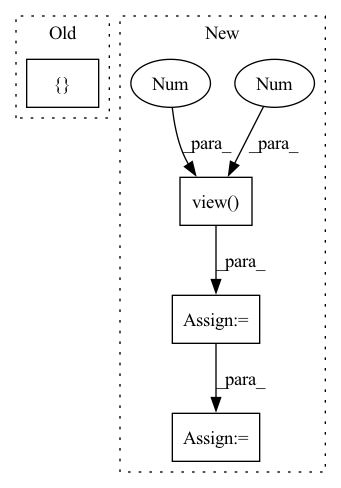

Pattern ID :2020
Before Change
name = self.get_name(name, layer=layer)
if norm_par is None:
// TODO: what if dataset is None?
norm_par = { "mean": [0.0], "std": [1.0]} if dataset.normalize else dataset.norm_par
if "num_classes" not in kwargs.keys() and dataset is None:
kwargs["num_classes"] = 1000
super().__init__(name=name, model=model, dataset=dataset,After Change
if norm_par is None and isinstance(dataset, ImageSet):
if dataset.normalize and dataset.norm_par is not None:
mean = torch.tensor(dataset.norm_par["mean"], device=env["device"]).view(-1, 1, 1)
std = torch.tensor(dataset.norm_par["std"], device=env["device"]).view(-1 , 1, 1 )
clip_min, clip_max = -mean / std, (1 - mean) / std
self.adv_train_eval_alpha /= std
self.adv_train_eval_eps /= std
self.adv_train_alpha /= std
self.adv_train_eps /= stdIn pattern: SUPERPATTERN
Frequency: 4
Non-data size: 4
Instances Fragment ID: 8916361
Project Name: ain-soph/trojanzoo
Commit Name: 6196f5a49a32415dd69353946703a3878bc375ad
Time: 2021-07-19
Author: ain-soph@live.com
File Name: trojanvision/models/imagemodel.py
M Class Name: ImageModel
N Class Name: ImageModel
M Method Name: __init__(17)
N Method Name: __init__(17)
M Parent Class: Model
N Parent Class: Model
M File Name: trojanvision/models/imagemodel.py
N File Name: trojanvision/models/imagemodel.py
M Start Line: 72
M End Line: 74
N Start Line: 74
N End Line: 112
Before Change
for size, stride in zip(grid_sizes, self.strides):
grid_height, grid_width = size
stride_lists.extend([ strideAfter Change
for size, stride in zip(grid_sizes, self.strides):
grid_height, grid_width = size
stride = torch.as_tensor([stride], dtype=dtype, device=device)
stride = stride.view(-1 , 1 )
stride = stride.repeat(1, grid_height * grid_width * self.num_anchors)
stride = stride.reshape(-1, 1)
wh_weights.append(stride)
return torch.cat(wh_weights) Fragment ID: 8916408
Project Name: zhiqwang/yolov5-rt-stack
Commit Name: 9e97b20d3a37ef80a23bf69df9216d69d6a9c951
Time: 2020-11-09
Author: zhiqwang@outlook.com
File Name: models/anchor_utils.py
M Class Name: AnchorGenerator
N Class Name: AnchorGenerator
M Method Name: set_wh_weights(4)
N Method Name: set_wh_weights(4)
M Parent Class: nn.Module
N Parent Class: nn.Module
M File Name: models/anchor_utils.py
N File Name: models/anchor_utils.py
M Start Line: 23
M End Line: 32
N Start Line: 23
N End Line: 33
Before Change
scores = filter_false_negatives(scores, test_spo, all_spo, direction=direction)
scores[torch.isnan(scores)] = float("-Inf")
mrr, hits = [] , []
for i, (s, p, o) in enumerate(test_spo):
row = scores[i] // corresponding predictionsAfter Change
idx = 0 if direction == "s" else 2
targets = test_spo[:, idx].long()
arange = torch.arange(len(targets), dtype=torch.long, device="cpu")
true_scores = scores[arange, targets].view(-1 , 1 )
// remove the true subjects/objects from the scores so they don"t factor in rankings
scores = scores.clone()
scores[arange, targets] = float("-Inf")
// follow LibKGE protocol by taking the mean rank among all entities with same score
ranks = torch.sum(scores > true_scores, dim=1, dtype=torch.double)
num_ties = torch.sum(scores == true_scores, dim=1, dtype=torch.double)
ranks = ranks + num_ties // 2 + 1 // ranks are one-indexed
mrr = (1 / ranks).numpy()
hits = (ranks <= k).numpy()
return list(mrr), list(hits)
Fragment ID: 8916185
Project Name: tsafavi/codex
Commit Name: 3dddca246e4fb616cef251bafb32dac648e8eedb
Time: 2020-07-08
Author: tsafavi@umich.edu
File Name: scripts/baseline.py
M Class Name: AnonimousClass
N Class Name: AnonimousClass
M Method Name: evaluate_rankings(5)
N Method Name: evaluate_rankings(5)
M Parent Class:
N Parent Class:
M File Name: scripts/baseline.py
N File Name: scripts/baseline.py
M Start Line: 129
M End Line: 151
N Start Line: 129
N End Line: 148
Before Change
axis=0)
if self.report:
if "report" not in pkg:
pkg["report"] = {}
pkg["report"]["warp_factor"] = warp_factor
pkg["chunk"] = torch.FloatTensor(rwav)
return pkgAfter Change
warp_factor = random.random() * (self.factor_range[1] - self.factor_range[0]) + self.factor_range[0]
samp_warp = wav.shape[0] + int(warp_factor * wav.shape[0])
samp_warp = 10000
rwav = kaldi.resample_waveform(wav.view(1 , -1 ) , self.orig_freq, samp_warp)
rwav = rwav.view(-1)
if len(rwav) > len(wav):
mid_i = (len(rwav) // 2) - len(wav) // 2
rwav = rwav[mid_i:mid_i + len(wav)]
if len(rwav) < len(wav):
diff = len(wav) - len(rwav)
P = (len(wav) - len(rwav)) // 2
if diff % 2 == 0:
rwav = torch.cat((torch.zeros(P, ),
rwav,
torch.zeros(P, )),
axis=0)
else:
rwav = torch.cat((torch.zeros(P, ),
rwav,
torch.zeros(P + 1, )),
axis=0)
rwav = rwav.view(1, -1)
return rwav Fragment ID: 8916366
Project Name: shangeth/wavencoder
Commit Name: d6ac9e52ccc9dd3afdfc311ad0515c24ca179648
Time: 2020-10-27
Author: shangethrajaa@gmail.com
File Name: wavencoder/transforms/speed.py
M Class Name: SpeedChange
N Class Name: SpeedChange
M Method Name: __call__(2)
N Method Name: __call__(2)
M Parent Class:
N Parent Class:
M File Name: wavencoder/transforms/speed.py
N File Name: wavencoder/transforms/speed.py
M Start Line: 9
M End Line: 38
N Start Line: 12
N End Line: 36